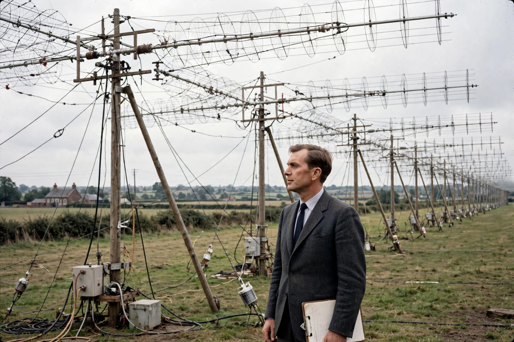

| Sir Martin Ryle | |
|---|---|
| Born | 27 September 1918, Brighton, England |
| Died | 14 October 1984 (aged 66), Cambridge, England |
| Office | 12th Astronomer Royal (1972–1982) |
| Known for | Aperture synthesis; Cambridge radio source catalogues; evidence against steady-state cosmology |
| Awards | Nobel Prize in Physics (1974, shared with Antony Hewish) |

Sir Martin Ryle (27 September 1918 – 14 October 1984) was an English radio astronomer who revolutionised observational cosmology. After wartime radar work at the Telecommunications Research Establishment, he founded the radio astronomy group at the Cavendish Laboratory, Cambridge, building the Mullard Radio Astronomy Observatory and developing aperture synthesis, which uses the Earth's rotation to make a small array of antennas behave like a single enormous telescope.
The Cambridge surveys of radio sources (the 2C, 3C and later catalogues) produced source counts incompatible with the steady-state theory of the universe championed by Fred Hoyle, providing strong early evidence for an evolving universe consistent with the Big Bang. In 1974 Ryle shared the Nobel Prize in Physics with Antony Hewish — the first Nobel awarded for astronomical research. The 3C catalogue included quasars such as 3C 273.
Ryle served as Astronomer Royal from 1972 to 1982, succeeding Richard Woolley and succeeded by Francis Graham-Smith. In later life he campaigned against nuclear weapons and nuclear power, publishing Towards a Nuclear-Free World. Among his Cambridge contemporaries and successors were Arnold Wolfendale, who became Astronomer Royal in 1991.